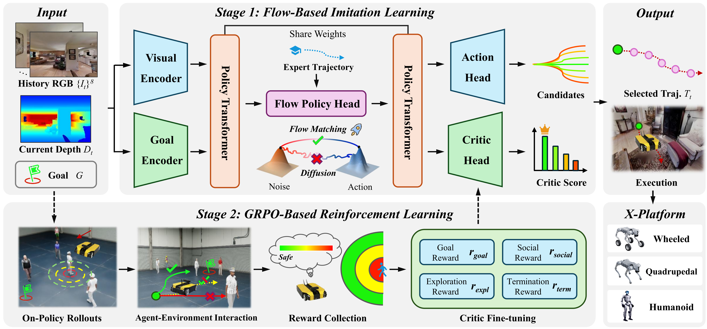

Main Video
The first FLow-based U policy for X-platform navigation.
The first FLow-based U policy for X-platform navigation.
Testing our method in real-world environments.
Evaluating our method on fundamental navigation tasks in dynamic scenarios via our proposed benchmark DynBench.
Autonomous navigation requires a broad spectrum of skills, from static goal-reaching to dynamic social traversal, yet evaluation remains fragmented across disparate protocols. We introduce DynBench, a dynamic navigation benchmark featuring physically valid crowd simulation. Combined with existing static protocols, it supports comprehensive evaluation across six fundamental navigation tasks. Within this framework, we propose FLUX, the first flow-based unified navigation policy. By linearizing probability flow, FLUX replaces iterative denoising with straight-line trajectories, improving per-step inference efficiency by 47% over prior flow-based methods and 29% over diffusion-based ones. Following a static-to-dynamic curriculum, FLUX initially establishes geometric priors and is subsequently refined through reinforcement learning in dynamic social environments. This regime not only strengthens socially-aware navigation but also enhances static task robustness by capturing recovery behaviors through stochastic action distributions. FLUX achieves state-of-the-art performance across all tasks and demonstrates zero-shot sim-to-real transfer on wheeled, quadrupedal, and humanoid platforms without any fine-tuning.

Fig. 1. FLUX : A Flow-Based Unified Policy for Cross-Embodiment Navigation. Our static-to-dynamic training curriculum enables efficient, socially-aware navigation, which transfers zero-shot across three heterogeneous platforms in the real world without platform-specific fine-tuning.

Fig. 2. Overview of FLUX framework. FLUX follows a static-to-dynamic training paradigm. Stage 1 (Top): Given egocentric visual observations and a goal, the flow policy head is pre-trained via imitation learning on static expert trajectories. It generates diverse candidate paths, which are evaluated by the critic head. Stage 2 (Bottom): The framework is post-training using Group Relative Policy Optimization via on-policy rollouts. This stage optimizes for both goal-reaching efficiency and social compliance in dynamic environments.
Metrics:
SR (Success Rate) /
SPL (Success weighted by Path Length) /
ET (Exploration Time) /
EA (Exploration Area)
S-TL (Success Time Length) /
Coll. (Collision) /
SC (Safety Cost) /
MinDist. (Minimum Distance).
| Methods | Static Scenes | Dynamic Scenes | ||||||||||||
|---|---|---|---|---|---|---|---|---|---|---|---|---|---|---|
| PointNav | Exploration | ImageNav | Dyn. PointNav | Dyn. Exploration | SocialNav | |||||||||
| SR | SPL | ET | EA | SR | SPL | SR | S-TL | ET | EA | SR | Coll | SC | MinDist | |
| Traditional Planning Methods | ||||||||||||||
| DWA | 33.5 | 32.4 | - | - | - | - | 38.2 | 18.5 | - | - | 41.8 | 10 | 7.3 | 4.1 |
| FBE | - | - | 4.3 | 11.2 | - | - | - | - | 20.3 | 39.5 | - | - | - | - |
| Reinforcement Learning Methods | ||||||||||||||
| DD-PPO | 19.5 | 19.2 | - | - | - | - | 8.4 | 7.7 | - | - | 1.5 | 18 | 4.3 | 3.4 |
| Falcon | 40.0 | 33.6 | - | - | - | - | 19.0 | 16.4 | - | - | 13.8 | 17 | 4.2 | 3.6 |
| Hybrid Modular Methods | ||||||||||||||
| iPlanner | 66.8 | 65.1 | - | - | - | - | 30.8 | 15.4 | - | - | 35.3 | 13 | 6.3 | 4.3 |
| ViPlanner | 63.4 | 62.4 | - | - | - | - | 27.5 | 17.2 | - | - | 37.0 | 12 | 5.9 | 4.3 |
| Imitation Learning Methods | ||||||||||||||
| GNM | - | - | 22.1 | 27.8 | 16.3 | 15.7 | - | - | 29.7 | 65.5 | - | - | - | - |
| ViNT | - | - | 24.4 | 36.2 | 12.6 | 11.8 | - | - | 31.9 | 73.2 | - | - | - | - |
| Generative Modeling Methods | ||||||||||||||
| NoMaD | - | - | 35.5 | 62.5 | 8.5 | 7.6 | - | - | 34.9 | 75.0 | - | - | - | - |
| FlowNav | - | - | 36.0 | 64.1 | 9.2 | 8.5 | - | - | 35.8 | 75.7 | - | - | - | - |
| NavDP | 77.8 | 74.8 | 72.5 | 167.2 | 43.4 | 43.4 | 38.7 | 31.9 | 43.6 | 93.7 | 59.3 | 21 | 5.5 | 3.5 |
| Ours | 80.9 | 78.6 | 73.7 | 172.8 | 44.0 | 44.4 | 42.4 | 20.6 | 55.1 | 128.7 | 64.0 | 16 | 4.4 | 4.0 |
Tab: Performance Comparison Across Six Fundamental Navigation Tasks.
This table presents quantitative comparisons of six core navigation tasks in both static and dynamic scenes,
covering traditional planning, reinforcement learning, hybrid modular, imitation learning, and generative modeling methods.
Our approach achieves state-of-the-art performance across all metrics, demonstrating superior effectiveness in both static and dynamic navigation scenarios.

If you find this work useful, please consider citing:
@article{gong2025flux,
title = {FLUX: Accelerating Cross-Embodiment Generative Navigation Policies via Rectified Flow and Static-to-Dynamic Learning},
author = {Gong, Zeying and Zhong, Yangyi and Ding, Yiyi and Hu, Tianshuai and Zhao, Guoyang and Kong, Lingdong and Li, Rong and You, Jiadi and Liang, Junwei},
journal = {arXiv preprint arXiv:2603.12806},
year = {2025}
}